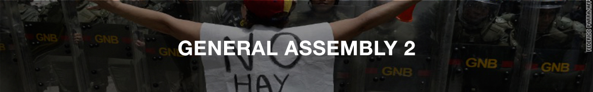
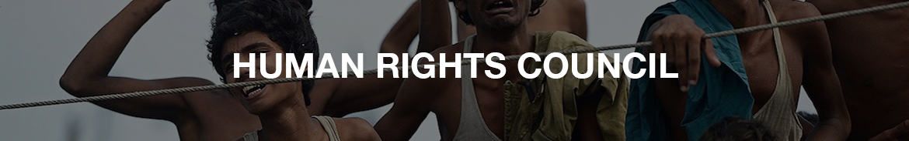
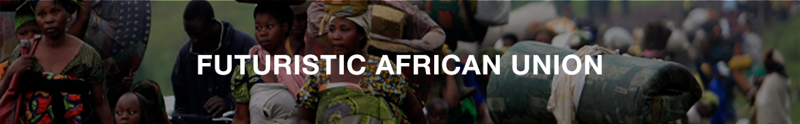

Conference Topic: Crisis


The first general assembly, also known as the disarmament and international security committee deals with disarmament, global challenges and threats to peace that affects the international community and seeks out solutions to the challenges in the international security regime. It includes all nations that are United Nations member states.
Practice Debate Topic: Reviewing the Arms Trade Treaty in the context of weapon transfers in ongoing conflict regions
Conference Topic: Reviewing regional and international diplomatic efforts towards mitigating armed conflict and rapprochement between Sudan and South Sudan

GA2 or the Economic and Financial Committee is bounded and regulated by the principles of Economics. Ga2 follows a masterful and theoretical approach to debate as each delegate has to be aware of the global structure and anatomy and of how the markets work. This committee would be utopia for those who replenish their souls by studying economics. Novices can also get a strong foothold by initiating their MUN endeavors in this committee. Advice to all delegates is to be thoroughly prepared when it comes to dissecting a problem and implementing a complex solution.
Practice Debate Topic: Resource dependency risk management with special emphasis on natural capital dependent LEDCs
Conference Topic: The socio-economic crisis in Venezuela

The Human Rights Council is an inter-governmental body within the United Nations structure, with a membership consisting of 47 states. The Council is responsible for strengthening the promotion and protection of human rights around the globe. It was created by the UN General Assembly in 2006 with the overall objective of addressing human rights violations.
Council members are elected by the 192 member states of the UN General Assembly. Any UN member state can be elected to the Council if it receives an absolute majority of votes. The 47 Council seats are designed to ensure equitable geographical representation: 13 members are elected from the African Group; 13 from the Asian Group; 6 from the Eastern European Group; 8 from the Latin American and Caribbean Group; and 7 from the Western European and Other States Group.
The first members of the Human Rights Council were elected on 9 May 2006. The last Council elections were held on 12 May 2009, and the next elections will be held in 2012. Members are elected for three-year terms. They are not eligible for immediate re-election after serving two consecutive terms.
When voting for members of the Council, member states take into consideration a candidates' contribution to the promotion and protection of human rights. Upon election, members commit themselves to cooperating with the Council and to upholding the highest standards in the promotion and protection of human rights. Candidates to the Council also submit voluntary pledges and commitments with regard to the promotion and protection of human rights.
The Council serves as the main United Nations forum for intergovernmental cooperation and dialogue on human rights issues. Its focus is to help member states meet their human rights obligations through dialogue, capacity building, and technical assistance. The Council also makes recommendations to the General Assembly for further development of international law in the field of human rights.
Through what is called a “Universal Periodic Review,” the Council assesses the situation of human rights in all 192 UN member states. It also has an Advisory Committee, which provides expertise and advice on thematic human rights issues which pertain to all parts of the world. Another element of its work is a “Complaints Procedure,” which allows individuals and organizations to bring complaints about human rights violations to the attention of the Council.
The Council addresses specific country situations or thematic issues through a system called ‘special procedures.’ Currently, there are 33 thematic and 8 country mandates.
The UN Human Rights Council (UNHRC) was established in 2006 following a resolution by the UN General Assembly. At the same time, the UN closed the former Commission on Human Rights. The UNHRC meets a number of times each year and is able to deal with emergency situations where human rights are being violated as they arise.
The UNHRC has retained certain parts of the regulatory framework from the Commission on Human Rights, for example the ability to appoint independent special rapporteurs as well as the working groups for different countries and thematic human rights issues. At present, there are special rapporteurs for eight countries: Cambodia, Korea, Haiti, Iran, Myanmar, the Palestinian territories occupied since 1967, Somalia and Sudan. The 33 thematic rapporteurs handle issues such as freedom of expression, freedom of religion, torture, violence against women, the right to education and extrajudicial executions.
The UNHRC also regularly reviews the situation for human rights in all UN member states via the Universal Periodic Review (UPR). Every year, 48 countries are reviewed. This means that each state is reviewed every four years. Countries that are members of the UNHRC are reviewed at some point during their term of membership.
In addition to monitoring and regular reviews, the UNHRC also offers help and support to improve the situation for human rights in different countries.
Practice Debate Topic: Assessing the right to self-determination of the Kurdish people with special emphasis on Turkish Kurdistan
Conference Topic:Discussing the concept of transitional justice and it's application to advance rehabilitation within nations transitioning from conflicted situations

The Futuristic African Union is a committee set in years where the African continent rises from the shadows to attain the status of a global superpower through unexpected alliances and strategic negotiations. Being a committee based on time lapses and in depth situational reports, delegates are required to be think on their feet and strive towards attaining nothing but the best for his or her country. The FAU demands an advanced level of debate and exemplary diplomacy from all delegates. As head of state powers are provided within the committee, efficient resolution of hypothetical conflicts is beyond essential. For all those daring enough to be a part of this first of its kind committee, good luck.
Practice Debate Topic: Crisis
Conference Topic: Crisis
Practice Debate Topic: Addressing the question of demilitarisation of the arctic circle
Conference Topic: Discussing the question of Palestinian statehood
MADE BY TANEISHQ MUHUNTHAN
HEAD OF INFORMATION TECHNOLOGY